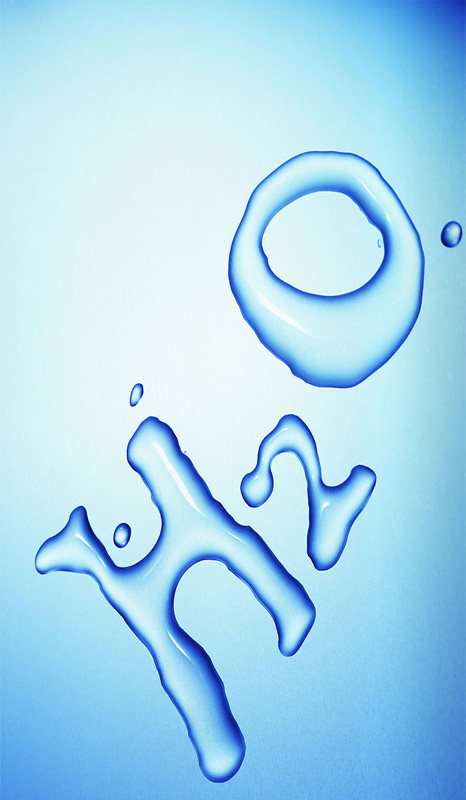

生命之源 在地球上，哪里有水，哪里就有生命。一切生命活动都是起源于水的。人体内的水分，大约占到体重的65%。其中，脑髓含水75%，血液含水83%，肌肉含水76%，连坚硬的骨骼里也含水22%呢!没有水，食物中的养料不能被吸收，废物不能排出体外，药物不能到达起作用的部位。人体一旦缺水，后果是很严重的。缺水1%-2%，感到渴；缺水5%，口干舌燥，皮肤起皱，意识不清，甚至幻视；缺水15%心跳急促 失忆，意识就快消失。缺水20%晕倒，像死一样。往往甚于饥饿。没有食物，人只可以活3周，如果连水也没有，顶多能活3天。 |
基本信息
水（H₂O）是由氢、氧两种元素组成的无机物，在常温常压下为无色无味的透明液体。水是最常见的物质之一，是包括人类在内所有生命生存的重要资源，也是生物体最重要的组成部分。水在生命演化中起到了重要的作用。人类很早就开始对水产生了认识，东西方古代朴素的物质观中都把水视为一种基本的组成元素，水是中国古代五行之一；西方古代的四元素说中也有水。 |
||
图片
|
水资源介绍